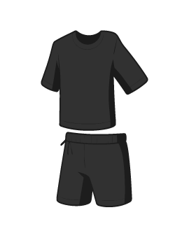

01. LABIS
가장 완성도 높은 인공지능
최신 AI 기술과 엄격한 데이터 검증을 거칩니다.
실상황에 즉시 적용할 수 있으며, 누구나 안심하고 사용할 수 있는
단단하고 안정적인 AI 모델을 개발합니다.
labis_core_engine.py
1import torch 2from labis.core.engine import LBS_NeuralCore, DistributedCluster 3from labis.security import DataIntegrityValidator 4 5# Initialize LABIS Proprietary Enterprise AI Core 6class LabisEnterpriseModel(LBS_NeuralCore): 7 def __init__(self, nodes=128, precision="INT4_QAT"): 8 super().__init__(architecture="LBS-Visionary-70B") 9 self.device = DistributedCluster.get_optimal_device() 10 11 print(f"[*] Booting LABIS Core across {nodes} zero-trust nodes...") 12 13 # Load weights with strict data validation (LABIS Core Value) 14 self.model = self.load_proprietary_weights( 15 vault_uri="lbs-vault://models/core-70b-v4", 16 verify_checksum=True, 17 quantization=precision 18 ) 19 self.validator = DataIntegrityValidator(level="strict") 20 21 @torch.compile 22 def infer_stream(self, data_stream): 23 """ Executes multi-dimensional attention using LBS-Weights """ 24 validated_data = self.validator.verify(data_stream) 25 26 # Proprietary inference engine for real-time processing 27 logits = self.model.forward(validated_data, use_flash_attn=True) 28 return logits 29 30# Deploying LABIS AI Core to production... 31labis_core = LabisEnterpriseModel() 32labis_core.deploy_to_production()
02. AiVY
패션과 AI의 완벽한 융합
빅데이터 기반의 트렌드 태그(#가을, #힙 등) 매핑.
사용자의 신체 스펙과 원하는 핏을 AI가 분석하여,
나에게 딱 맞는 옷을 가장 저렴하게 고를 수 있도록 돕습니다.
AiVY Style Agent
이번 주말 데이트 미니멀룩 추천해 줄래? 10만 원 안팎으로!

03. Secury
24시간 잠들지 않는 보안
고성능 AI가 타 회사의 보안 위협을 상시로 감시합니다.
기업의 보안 인력 소모는 최소화하면서도,
사이버 공격의 사각지대 없는 빈틈없는 안전을 구축합니다.
root@secury-node:~
root@secury:~$ ./start_daemon.sh
INFO: Engine Initialized.
WARN: Abnormal traffic on Port 443
CRITICAL: Ransomware signature matched!
SUCCESS: Threat neutralized in 0.121s.
root@secury:~$